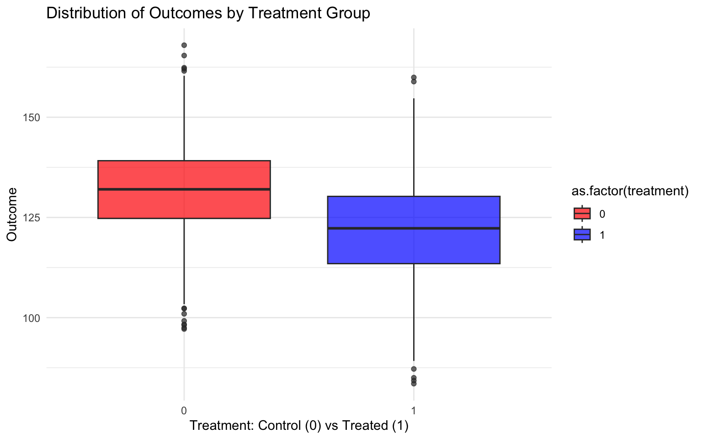
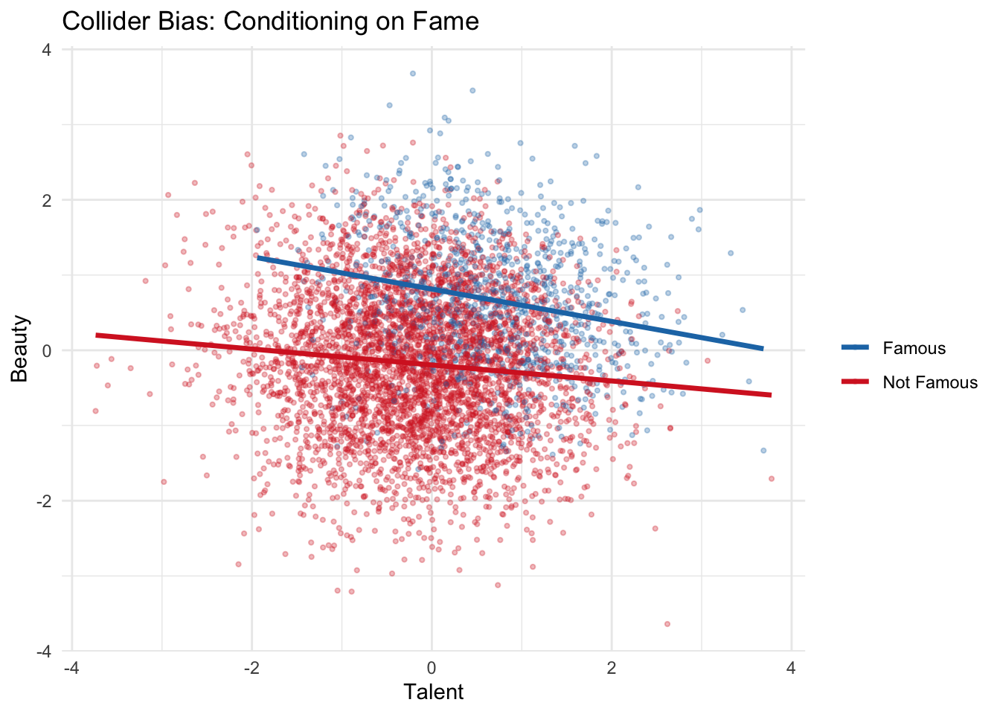
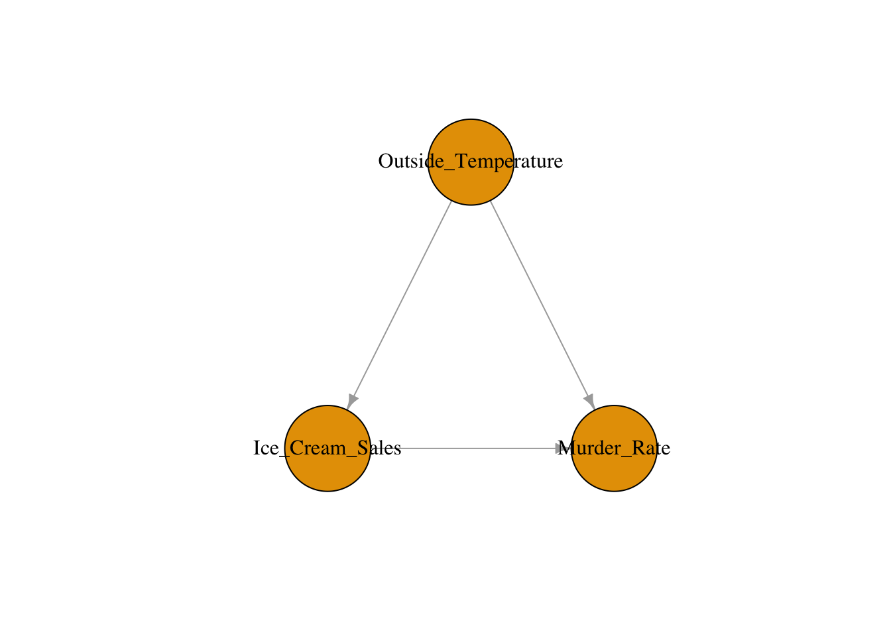
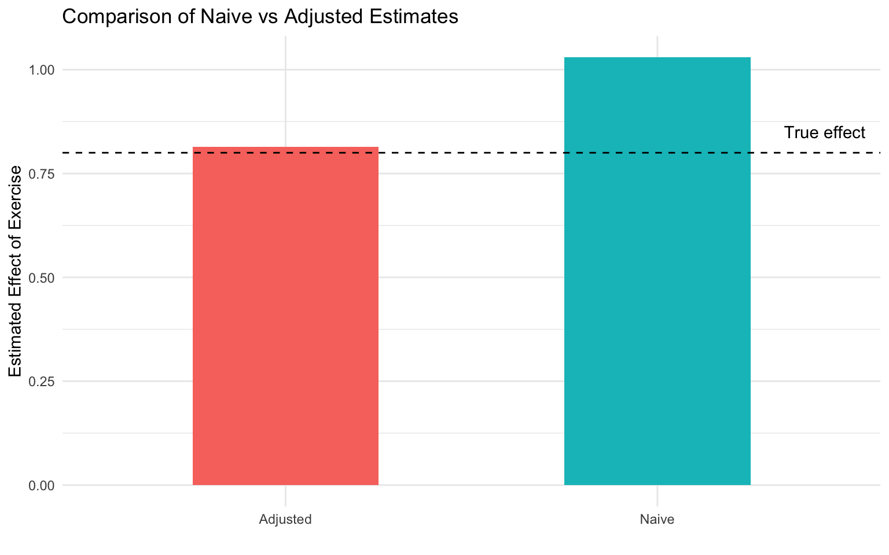
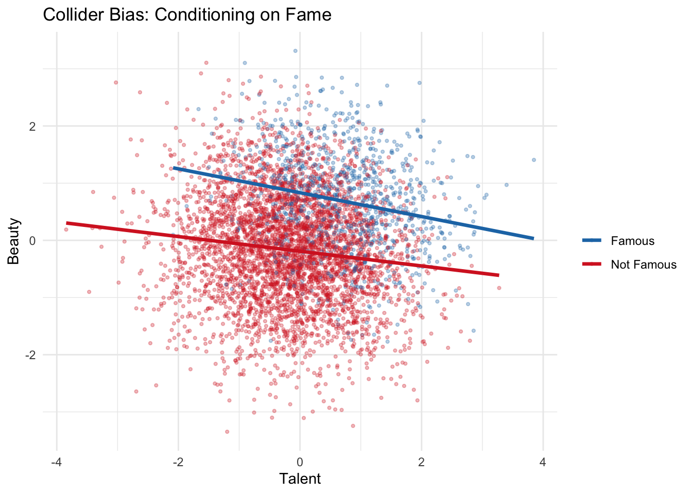
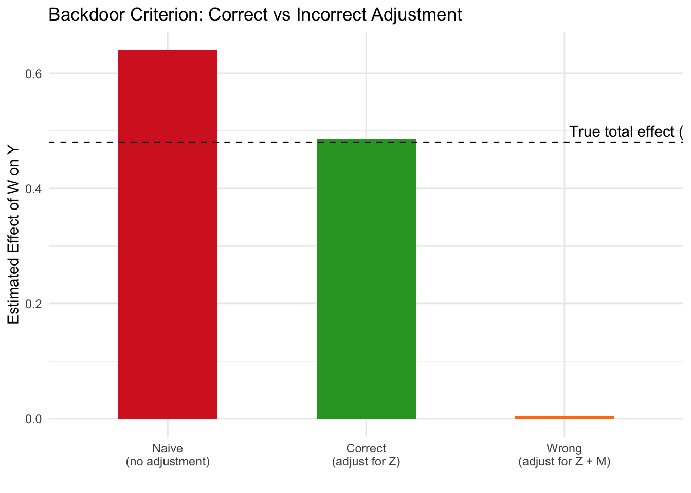
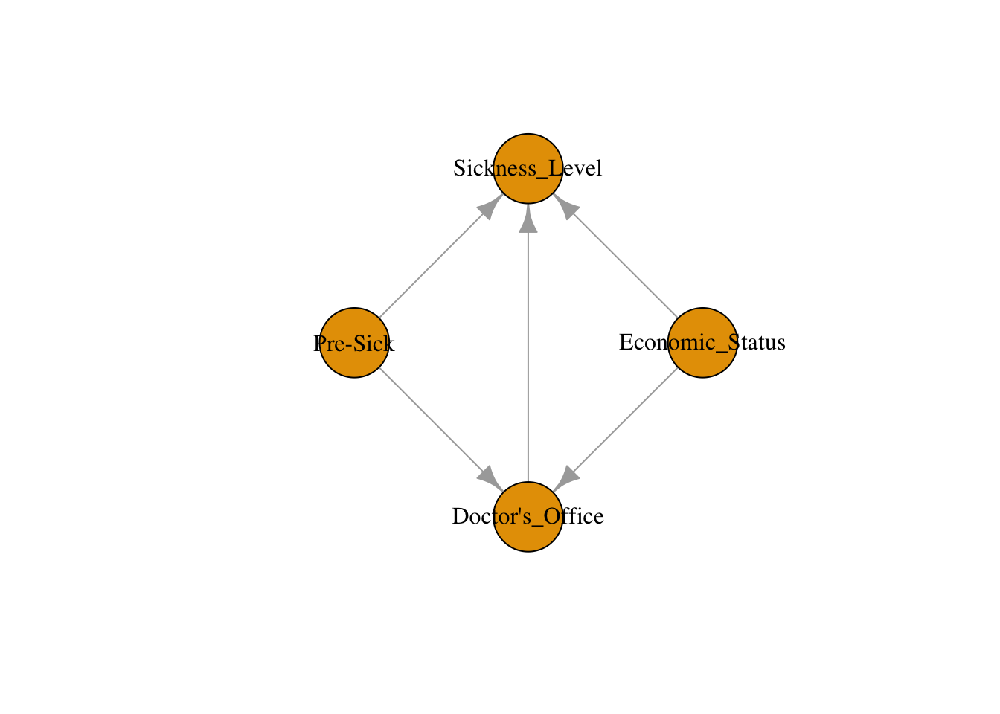

4 Introduction to Causal Diagrams (DAGs)
Class materials
Slides: Module 4
Textbook reading
Hernán & Robins, Causal Inference: What If – Chapters 6–7 ## Supplementary reading
Greenland S, Pearl J, Robins JM. (1999). Causal Diagrams for Epidemiologic Research. Epidemiology, 10(1), 37–48.
Elwert F. (2013). Graphical Causal Models. In: Handbook of Causal Analysis for Social Research. Springer. pp. 245–273.
Topics covered
- What is a DAG? Definitions, vocabulary, and drawing DAGs in R
- Three types of paths: chains, forks, and colliders
- D-separation: when are two variables conditionally independent?
- The backdoor criterion: a formal rule for choosing adjustment variables
- Application: drawing DAGs for public health scenarios
- Checklist Item 5: Are the right variables being adjusted for?
4.1 What is a DAG?
A Directed Acyclic Graph (DAG) is a visual representation of causal assumptions about how variables relate to one another. Each node represents a variable, and each directed edge (arrow) represents a direct causal effect. “Acyclic” means you cannot follow arrows and return to where you started — there are no feedback loops. DAGs are not statistical models: they do not encode the magnitude or functional form of causal effects. Instead, they encode qualitative causal structure — who causes whom. Importantly, missing arrows are strong claims: if there is no arrow from \(A\) to \(B\), the DAG asserts that \(A\) does not directly cause \(B\).
DAGs serve three crucial purposes. First, they make causal assumptions visible and therefore debatable — two researchers can draw different DAGs for the same problem, and the disagreement is about causal assumptions, not statistics. Second, they provide formal rules (d-separation, the backdoor criterion) for determining which variables to adjust for. Third, they help researchers communicate and critique study designs. In Module 3, we said “adjust for confounders to block backdoor paths,” but we left open the question of which variables are confounders, whether adjusting for the wrong variable could introduce bias, and how to communicate our assumptions transparently. DAGs answer all three questions.
Key vocabulary: A parent of a node is a direct cause; a child is a direct effect. An ancestor is any node from which you can reach the target by following arrows forward; a descendant is any node you can reach by following arrows forward from the target. A path is any sequence of connected edges (regardless of arrow direction) between two nodes. A directed path follows arrows in their direction.
Drawing DAGs in R: We can use the bnlearn and igraph packages to construct and visualize DAGs programmatically. In the example below, we model a common public health structure involving diet, exercise, and heart health. Diet is a confounder: it directly influences both how much people exercise and their overall heart health.
# library(ggplot2)
# library(dplyr)
# library(ggdag)
# library(dagitty)
# library(bnlearn)
# library(igraph)
set.seed(123)
n <- 2000
diet <- rnorm(n)
exercise <- 2 * diet + rnorm(n)
heart_health <- 3 * exercise + 4 * diet + rnorm(n)
df <- data.frame(diet, exercise, heart_health)
dag <- model2network("[diet][exercise|diet][heart_health|diet:exercise]")
g <- bnlearn::as.igraph(dag)
plot(g, layout = layout_as_tree(g, root = "diet"),
vertex.label.color = "black", vertex.size = 60, edge.arrow.size = 0.5)
This DAG encodes our assumption that diet causes both exercise and heart health, while exercise also causes heart health. The arrows make these assumptions explicit and debatable. If we ignore diet when estimating the effect of exercise on heart health, we risk attributing diet’s effect to exercise — a classic confounding problem.
4.2 Three types of paths: chains, forks, and colliders
Every path in a DAG is built from three elementary structures, and understanding how each behaves under conditioning is the key to knowing what to adjust for.
A chain (or mediator path) has the form \(A \to B \to C\). Here \(B\) mediates the causal effect of \(A\) on \(C\). Without conditioning, association flows from \(A\) to \(C\) through \(B\). Conditioning on \(B\) blocks the path: once we know \(B\), learning \(A\) tells us nothing new about \(C\). The practical implication is that you should not adjust for mediators if you want the total causal effect of \(A\) on \(C\).

In this example, weight loss is the mediator because exercise causes weight loss, which in turn affects the risk of diabetes. Based on this DAG, we are assuming that the only way exercise affects diabetes risk is through weight loss. If we were to condition on weight loss, we would block the causal path and underestimate (or eliminate) the effect of exercise.
A fork (or confounder path) has the form \(A \leftarrow B \to C\). Here \(B\) is a common cause of both \(A\) and \(C\), creating a spurious association between them. Conditioning on \(B\) blocks the path and removes the spurious association. This is exactly what we did in Module 3: adjusting for confounders to block backdoor paths.

Consider the hypothesis that ice cream sales cause higher murder rates. The DAG reveals that outside temperature is a confounder: hot weather drives both ice cream consumption and violent crime. Without adjusting for temperature, we would observe a spurious association between ice cream sales and murder rates. Conditioning on temperature blocks the backdoor path and reveals that ice cream has no causal effect on crime.
A collider has the form \(A \to B \leftarrow C\). Here \(B\) is a common effect of \(A\) and \(C\). Without conditioning, the path is naturally blocked — \(A\) and \(C\) are not associated through this path. But conditioning on \(B\) opens the path, creating a spurious association between \(A\) and \(C\). This is the dangerous case: adjusting for a collider introduces bias rather than removing it. An easy way to remember: a collider is a variable where two arrows point toward (or “collide into”) the variable.

In this classic example, the lawn being wet is a collider because it is caused by both the sprinkler turning on and rain. If we condition on the lawn being wet (e.g., we only look at days when the lawn is wet), then learning that the sprinkler was off makes it more likely that it rained — creating a spurious negative association between the sprinkler and rain that does not exist in the general population.
Collider bias simulation: Let’s see collider bias quantitatively. We generate two independent causes, Talent and Beauty, that both affect Fame (a collider). In the full population, Talent and Beauty are independent. But among famous people (conditioning on the collider), they become negatively associated.
n <- 5000
talent <- rnorm(n)
beauty <- rnorm(n)
fame <- 0.7 * talent + 0.7 * beauty + rnorm(n)
df <- data.frame(talent, beauty, fame)
# In the full population: no association
cor(df$talent, df$beauty)## [1] -0.006436179# Among famous people (conditioning on collider): spurious negative association
famous <- df[df$fame > quantile(df$fame, 0.8), ]
cor(famous$talent, famous$beauty)## [1] -0.2152751library(ggplot2)
df$famous <- ifelse(df$fame > quantile(df$fame, 0.8), "Famous", "Not Famous")
ggplot(df, aes(x = talent, y = beauty, color = famous)) +
geom_point(alpha = 0.3, size = 0.8) +
geom_smooth(method = "lm", se = FALSE, linewidth = 1.2) +
labs(title = "Collider Bias: Conditioning on Fame",
x = "Talent", y = "Beauty", color = "") +
scale_color_manual(values = c("Famous" = "#1f77b4", "Not Famous" = "#d62728")) +
theme_minimal()## `geom_smooth()` using formula = 'y ~ x'
In the full population, the correlation between Talent and Beauty is approximately zero — they are independent, as we generated them to be. But among famous people (those in the top 20% of Fame), the correlation becomes notably negative. This is collider bias in action: among the famous, if someone is not particularly talented, they are likely to be beautiful (and vice versa), because at least one of the two was needed to achieve fame. This is also known as Berkson’s bias when it arises from restricting a study to a selected subgroup (e.g., hospitalized patients).
Summary of conditioning rules: Conditioning blocks chains and forks, but opens colliders. This asymmetry is the source of the most common adjustment mistakes in applied research.
4.3 D-separation
Real causal models involve many variables and many paths. A path between two variables may contain multiple chains, forks, and colliders. D-separation is the formal rule that tells us whether two variables are conditionally independent given a set of variables \(S\).
A path between \(A\) and \(C\) is blocked by a set \(S\) if the path contains either: (1) a chain or fork where the middle variable is in \(S\) (we condition on it), or (2) a collider where the middle variable is not in \(S\) and no descendant of the middle variable is in \(S\). Two variables are d-separated given \(S\) if every path between them is blocked. If they are d-separated, there is no conditional association (given \(S\)). If they are d-connected (not d-separated), association may flow.
The power of d-separation is that it translates causal assumptions (encoded in the DAG) into statistical predictions (conditional independencies) that can, in principle, be tested against data. If the DAG predicts that \(A\) and \(C\) should be independent given \(S\), but they are not in the data, then at least one assumption in the DAG is wrong.
We use paths to track the flow of association through a DAG. A backdoor path is any path from the exposure to the outcome that has an arrow pointing into the exposure. For example, in the ice cream and murder rate DAG, there is a backdoor path Ice Cream Sales \(\leftarrow\) Outside Temperature \(\to\) Murder Rate, since the arrow between Outside Temperature and Ice Cream Sales points into Ice Cream Sales. In general, we want to close all backdoor paths and keep all causal (directed) paths open by conditioning on a specific set of variables. This will guarantee conditional exchangeability, allowing us to identify the causal effect.
# Demonstrating d-separation with simulation
n <- 5000
Z <- rnorm(n) # Common cause
W <- 0.6 * Z + rnorm(n) # Treatment
M <- 0.5 * W + rnorm(n) # Mediator
Y <- 0.4 * M + 0.5 * Z + rnorm(n) # Outcome
C <- 0.3 * W + 0.3 * Y + rnorm(n) # Collider
df <- data.frame(W, Z, M, Y, C)
# Marginal association between W and Y (d-connected)
cor(df$W, df$Y)## [1] 0.3758891# Conditional on Z: still associated (causal path through M remains open)
resid_W <- residuals(lm(W ~ Z, data = df))
resid_Y <- residuals(lm(Y ~ Z, data = df))
cor(resid_W, resid_Y)## [1] 0.159035# Conditional on Z and M: now d-separated (both paths blocked)
resid_W2 <- residuals(lm(W ~ Z + M, data = df))
resid_Y2 <- residuals(lm(Y ~ Z + M, data = df))
cor(resid_W2, resid_Y2)## [1] -0.0291488In this simulation, we can verify d-separation predictions empirically. \(W\) and \(Y\) are marginally associated (both the causal path through \(M\) and the backdoor path through \(Z\) are open). Conditioning on \(Z\) alone blocks the backdoor path but leaves the causal path through \(M\) open, so \(W\) and \(Y\) remain associated — this is correct and expected, since we want the causal effect to flow. Conditioning on both \(Z\) and \(M\) blocks all paths, and the residual correlation drops to approximately zero, confirming d-separation.
4.4 The backdoor criterion
The backdoor criterion is the central tool for deciding what to adjust for when estimating causal effects from observational data. Given a DAG, a set of variables \(S\) satisfies the backdoor criterion relative to treatment \(W\) and outcome \(Y\) if: (1) no variable in \(S\) is a descendant of \(W\), and (2) \(S\) blocks every backdoor path from \(W\) to \(Y\).
If \(S\) satisfies the backdoor criterion, then the Average Treatment Effect is identified through the adjustment formula:
\[ \text{ATE} = \sum_s \Big\{ E[Y \mid W = 1, S = s] - E[Y \mid W = 0, S = s] \Big\} \Pr(S = s) \]
This is the same adjustment formula from Module 3, but now we have a principled, graph-based method for choosing \(S\) rather than relying on informal reasoning about confounders.
The backdoor criterion protects against the three common adjustment mistakes: (1) failing to adjust for a confounder (leaves backdoor paths open), (2) adjusting for a mediator (blocks causal paths, underestimates the effect), and (3) adjusting for a collider (opens spurious paths, introduces new bias). Multiple valid adjustment sets may exist for a given DAG — the criterion tells you which sets are valid, not that there is only one correct answer.
# Demonstrating the backdoor criterion
n <- 5000
Z <- rnorm(n) # Confounder
W <- 0.5 * Z + rnorm(n) # Treatment
M <- 0.8 * W + rnorm(n) # Mediator
Y <- 0.6 * M + 0.4 * Z + rnorm(n) # Outcome (true total effect of W = 0.8 * 0.6 = 0.48)
df <- data.frame(Z, W, M, Y)
# Naive (biased): confounding through Z
naive <- lm(Y ~ W, data = df)
summary(naive)$coefficients["W", "Estimate"]## [1] 0.6403894# Correct: adjust for Z only (backdoor criterion satisfied)
correct <- lm(Y ~ W + Z, data = df)
summary(correct)$coefficients["W", "Estimate"]## [1] 0.4858651# Wrong: adjust for mediator M (blocks causal path)
wrong <- lm(Y ~ W + Z + M, data = df)
summary(wrong)$coefficients["W", "Estimate"]## [1] 0.004125454estimates <- data.frame(
Model = c("Naive\n(no adjustment)", "Correct\n(adjust for Z)", "Wrong\n(adjust for Z + M)"),
Estimate = c(
summary(naive)$coefficients["W", "Estimate"],
summary(correct)$coefficients["W", "Estimate"],
summary(wrong)$coefficients["W", "Estimate"]
)
)
estimates$Model <- factor(estimates$Model,
levels = c("Naive\n(no adjustment)", "Correct\n(adjust for Z)", "Wrong\n(adjust for Z + M)"))
ggplot(estimates, aes(x = Model, y = Estimate, fill = Model)) +
geom_col(width = 0.5) +
geom_hline(yintercept = 0.48, linetype = 2) +
annotate("text", x = 3.4, y = 0.50, label = "True total effect (0.48)") +
labs(title = "Backdoor Criterion: Correct vs Incorrect Adjustment",
y = "Estimated Effect of W on Y", x = "") +
scale_fill_manual(values = c("#d62728", "#2ca02c", "#ff7f0e")) +
theme_minimal() +
theme(legend.position = "none")
The naive model overestimates the effect because it ignores confounding through \(Z\). The correct model adjusts for \(Z\) only (satisfying the backdoor criterion) and recovers an estimate close to the true total effect of 0.48. The third model adjusts for both \(Z\) and the mediator \(M\), which blocks the causal pathway and yields an estimate near zero — dramatically underestimating the true effect. This illustrates why “adjust for everything” is not a safe strategy: the backdoor criterion tells us precisely which variables to include and which to leave out.
4.5 Application: drawing DAGs for public health scenarios
When modeling a causal relationship in public health — such as the effect of a doctor’s visit on sickness level — there are many factors that can make a causal diagram extremely complex. Insurance status, pre-existing illness, cleanliness of the living area, ability to take time off work: all of these might play a role. Rather than trying to include every possible variable, we can follow a systematic process to construct a useful DAG:
List out all factors: Going to the doctor’s office, insurance status, sickness level before treatment, cleanliness of living area, available time to take off work to go to doctor’s office.
Prune and combine factors based on domain knowledge: Some factors are related in similar ways. For example, a person’s insurance status, the quality of their living area, and whether they have time to visit the doctor all affect both the likelihood of visiting a doctor and their health outcomes in similar ways — people with better economic circumstances are more likely to visit doctors and tend to be healthier on average. We can simplify these into a single factor: economic status. After simplification, we have four variables: doctor’s office visit, economic status, pre-sickness level, and sickness level after visit.
Add causal relationships: Draw arrows representing the direction that causation flows from one variable to another. We hypothesize that visiting a doctor affects sickness level, while economic status and pre-sickness level are confounders — they affect both whether someone visits the doctor and their health outcome.

With this DAG in hand, we can now apply the backdoor criterion: to estimate the causal effect of a doctor’s visit on sickness level, we need to adjust for both economic status and pre-sickness level to block the backdoor paths. This structured approach — list, prune, draw, then apply the criterion — is a practical workflow you can use for any public health research question.
In our earlier diet/exercise/heart health simulation, we modeled a similar confounding structure where diet influences both exercise and heart health. By visualizing the relationships using a DAG and including diet as a covariate in our regression model, we blocked the backdoor path and isolated the true causal effect of exercise. This illustrates how understanding and modeling common causal structures is critical to producing valid results in public health research.
4.6 Checklist Item 5: Are the right variables being adjusted for?
The fifth item on our Causal Credibility Checklist asks whether the study’s adjustment strategy is correct given the plausible causal structure. This item works hand-in-hand with Item 4 (could confounding explain the result?). Where Item 4 asks whether confounding is a concern, Item 5 asks whether the adjustment strategy actually addresses it correctly.
To apply this item, start by drawing a plausible DAG for the study. Then check: does the set of variables the authors adjusted for satisfy the backdoor criterion? Are any mediators being adjusted for (which would block causal paths and underestimate the effect)? Are any colliders or their descendants being adjusted for (which would open spurious paths)? Are any confounders left unadjusted (which would leave backdoor paths open)?
A common red flag is when authors report adjusting for a long list of covariates without justification from a causal model. Without a DAG, “we adjusted for everything available” sounds rigorous, but it may include mediators or colliders that introduce bias. The DAG provides the discipline to evaluate whether the adjustment strategy is scientifically justified.